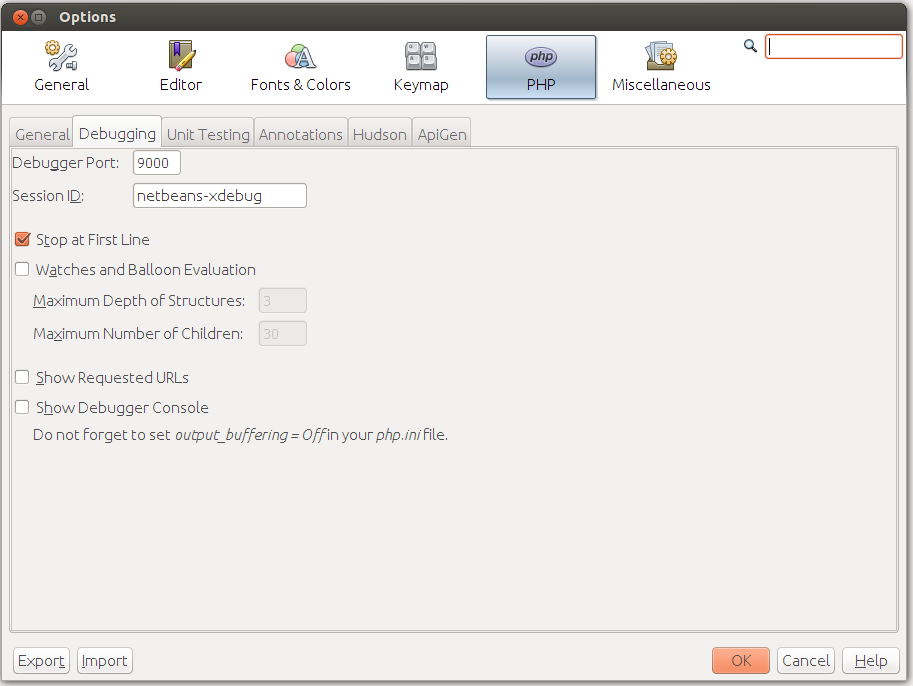

Debugging Options
NetBeans allows you to configure some aspects of the debugger's behavior. To open the Options dialog, select menu Tools->Options. In the dialog that appears, click the PHP tab, and in that tab, select Debugging subtab (figure B.12).
 Figure B.12. PHP Debugging Options
You typically do not change most of these options, you just need to have an idea of what they do. These are the following debugging options:
The Debugger Port and Session ID parameters define how NetBeans connects to XDebug. By default, the port number is 9000. The port number should be the same as the debugger port you set in php.ini file when installing XDebug. The session name is by default "netbeans-xdebug". You typically do not change this value.
The Stop at First Line parameter makes the debugger to stop at the first line of your index.php file, instead of stopping at the first breakpoint. This may be annoying, so you may want to uncheck this option.
The Watches and Balloon Evaluation option group is disabled by default, because these may cause XDebug fault. You can enable these options only when you know what you are doing.
The Maximum Depth of Structures parameter sets whether nested structures (like nested arrays, objects in objects, etc.) will be visible or not. By default, the depth is set to 3.
The Maximum Number of Children option defines how many array items to display in Variables window. If you set this to, say 30, you will see only the first 30 items even when the array has more than 30 items.
The Show Requested URLs option, when enabled, displays the URL which is currently being processed. It prints the URL to an Output window.
The Debugger Console option allows to see the output of PHP scripts being debugged. The output is shown in the Output window. If you plan to use this feature, it is recommended to add
output_buffering = Offparameter in[xdebug]section of your php.ini file, otherwise the output may appear with delays.